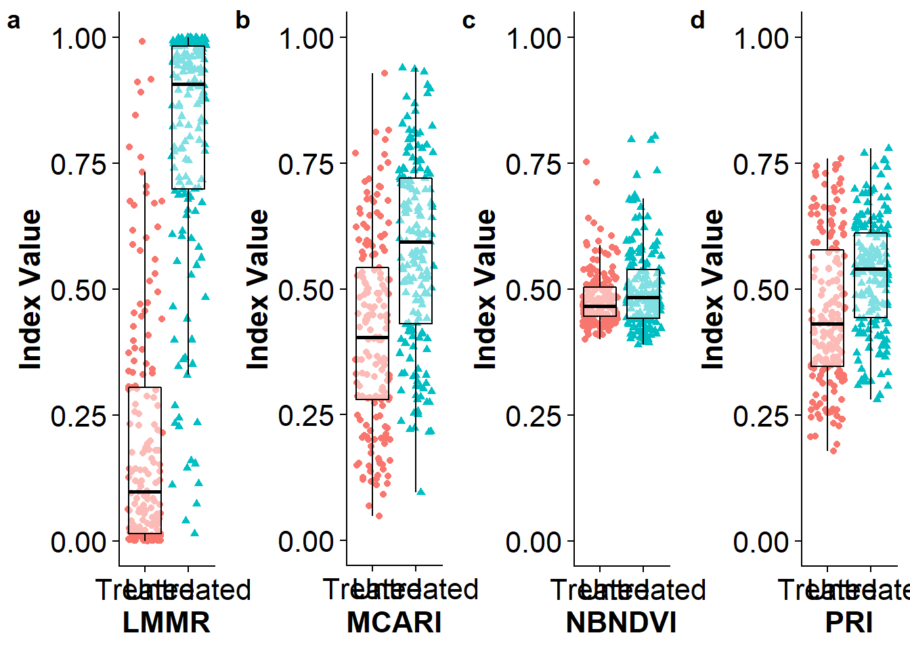

The following code generates the LMMR index (LemonMyrtle-MyrtleRust), a new spectral disease index for the pathosystem Austropuccinia psidii and Backhousia citriodora.
Please run the following code to install required R packages
install.packages(c("caret",
"cowplot",
"devtools",
"gdata",
"ggplot2",
"glmulti",
"hsdar",
"magrittr",
"plyr",
"PresenceAbsence",
"prospectr",
"rJava",
"reshape2",
"VSURF"))Note: For the package rJava it is necessary to set the path of the directory where Java is installed. Please install correct version of Java (32 or 64 bit) before setting the path to the Java dir. For help follow this LINK
For my setup I had to run:
Sys.setenv(JAVA_HOME='C:\\Program Files\\Java\\jre1.8.0_151')Now we load the installed packages:
library(caret)
library(cowplot)
library(devtools)
library(gdata)
library(ggplot2)
library(glmulti)
library(hsdar)
library(magrittr)
library(plyr)
library(PresenceAbsence)
library(prospectr)
library(rJava)
library(reshape2)
library(VSURF)Also the necessary functions, which can be download from the GitHub repository:
source("R/FUN_drop_cat_var.R")
source("R/FUN_exportVSURF.R")
source("R/FUN_raw2speclibhsdar.R")
source("R/FUN_prepggwide2long.R")And create a directory for the analysis output:
dir.create("output", FALSE, FALSE)The following chunk of code is loading the cleaned spectral data (1), is then checking how many factor levels are stored in the Type column (2) and also dropping the level
ori.data <- read.csv("data/data.wo.out.binned.cut.csv") #1
levels(ori.data$Type) #2
data <- drop_class(ori.data, ori.data$Type, "Healthy") #3
Type <- data$Type #4
data$Type <- ifelse(data$Type=='Untreated',1,0) #5
data[names(data)[-1]] <- log(data[names(data)[-1]]) #6The VSURF package is used to conduct a pre-selection of important variables. This pre-selection was done as it reduced the total runtime of the analysis by avoiding a direct model selection procedure which would be more time consuming. The VSURF selection was repeated 10 times (1-2) to account for random selection encounters (~ 30h runtime).
set.seed(20180111)
feature.set <- list()
runs <- seq(1, 10, 1) # 1
for (i in runs) {
feature.set[[i]] <-
VSURF(data[, 2:202], data[, 1],
clusterType = "FORK", ntree = 2000,
mtry = 50
)
} # 2
saveRDS(feature.set, "data/features.rds") # 4feature.set <- readRDS("data/features.rds") #5As we ran the VSURF feature selection ten times, the container list (1) was filled with ten result object where each contains, amongst others, three vectors of important variables. One vector (varselect.thres) contains a coarse set of important features, another (varselect.interp) a refined set, and a third contains a set of important features with no redundancy (varselect.pred). Pls refer to the VSURF vignette for more information on the different sets. For our analysis, we want to find the unique wavebands among all ten selections. Therefore a result list was created (2) and we looped through each single object (3) to assign them to the result list (band.vectors). This list was turned into a single object (4) and all unique wavebands were selected (5).
runs <- seq(1, length(feature.set), 1) # 1
band.vectors <- list() # 2
for (i in runs) {
band.vectors[[i]] <-
export_vsurf(feature.set[[i]]$varselect.pred, data[, 2:202])
} # 3
VSURF.selection <- unlist(band.vectors) # 4
VSURF.selection <- sort(unique(VSURF.selection)) # 5The 27 unique, most important wavebands could be used as input for an exhaustive model selection procedure using the package glmulti. We first set a seed (1) to avoid random number processing and reproduce our results and then run the model selection (2) to find the four most important wavebands. As glmulti does not provide model coefficients, another logistic regression was run (3) on the glmulti result to find coefficients for the model. We saved (4) and reloaded (5) the final model to reproduce our results quicker when re-running the code. Eventually, the coefficients (6) and the most important wavebands (7) of the final model were used to generate a linear function (8) that is most suitable to discriminate treated and untreated trees.
set.seed(20180117) # 1
multi.model <- glmulti(y = names(data)[1],
xr = paste0("X", VSURF.selection),
data, maxsize = 4,
level = 1,
family = binomial) # 2
model.1 <- glm(as.formula(summary(multi.model)$bestmodel),
data,
family = binomial) # 3
saveRDS(model.1, "output/LMMRmodel.RDS") # 4model.1 <- readRDS(file = 'output/LMMRmodel.RDS') #5coefficients(model.1) # 6## (Intercept) X545 X555 X1505 X2195
## 18.38680 75.38174 -78.80910 45.99251 -46.83051best.bands <- row.names(summary(model.1)$coefficients)[c(2, 3, 4, 5)] # 7
LMMR.model.eq <- "log[P/(1 - P)] = 18.387 + 75.382 log[R545] - 78.809 log[R555] + 45.993 log[R1505] - 46.831 log[R2195]" # 8Based on the LMMR model we designed the LMMR index through mathematical simplification. We initially log transformed the spectral reflectance to apply Eq. 2 and 3 (Heim et al., 2018). Additionally, to summarize the model coefficients and yield 5/3 as a simplification, the absolute 95% confidence intervals for coefficient pairs should overlap as this indicates products of approximately equal magnitudes. Please refer to our article for the required steps yielding the LMMR.
confint(model.1)## 2.5 % 97.5 %
## (Intercept) 9.964532 27.46334
## X545 57.012245 96.08337
## X555 -99.922625 -60.08532
## X1505 37.325040 56.02228
## X2195 -57.069230 -38.04457Initially, we load a spectral dataset (1), then we drop the class “Healthy” (2) and use our custom-build function (3) to create a spectral library for the hsdar package.
spectra <-
read.csv("data/data.wo.out.binned.cut.csv", check.names = FALSE) %>% #1
drop_class(., .$Type, "Healthy") %>% #2
raw2speclib(.) #3We used the hsdar pkg to define spectral indices. The PRI and MCARI already existed in the package and we added the NBNDVI (1) and the LMMR (2). We stored them all in a vector to simplify processing (3).
NBNDVI <- '(R850-R680)/(R850+R680)' #1
LMMR <- '((R545/R555)^(5/3))*(R1505/R2195)' #2
index <- c("PRI", "MCARI", NBNDVI, LMMR) #3After the indices were defined we can used them to convert our spectral data into index values by applying the indices on our spectral data (1-4). The LMMR must be transformed to the log scale (4) as it was developed that way and to use a fair comparison. We yield a new dataset (5) that contains index values and we add a column (6) containing the response (Treated, Untreated) for our classification.
index.list <- list()
index.list[['PRI']] <- vegindex(spectra, index[1]) #1
index.list[['MCARI']] <- vegindex(spectra, index[2]) #2
index.list[['NBNDVI']] <- vegindex(spectra, index[3]) #3
index.list[['LMMR']] <- log(vegindex(spectra, index[4])) #4
index.df <- do.call(cbind.data.frame, index.list) #5
index.df$Type <- Type #6
write.csv(index.df, "output/specindices.csv", row.names = FALSE)First we split (1) our index dataset into training (2) and testing (3) to build a logistic regression model (train) and then validated this model on an isolated sample (test). We also defined classification parameters (4). For classification we used the caret pkg.
Splitting data:
inTrain <- createDataPartition(y = index.df$Type, p = .75, list = FALSE) #1
Train.75 <- index.df[inTrain,] #2
Test.25 <- index.df[-inTrain,] #3
ctrl <- trainControl(method = "boot",
number = 1000,
classProbs = FALSE,
savePredictions = TRUE) #4Creating training models:
# PRI Training
PRI.model <- train(Type ~ PRI,
data = Train.75,
method = "glm",
trControl = ctrl,
metric = c('Kappa'))
PRIvalues <- PRI.model$finalModel$fitted.values
sink(file = "output/PRItrain75eval.txt")
PRI.model$pred
summary(PRI.model)# estimates
confusionMatrix(PRI.model)
sink()
# MCARI Training
MCARI.model <- train(Type ~ MCARI,
data = Train.75,
method = "glm",
trControl = ctrl,
metric = c("Kappa"))
MCARIvalues <- MCARI.model$finalModel$fitted.values
sink(file = "output/MCARItrain75eval.txt")
MCARI.model$pred
summary(MCARI.model)
confusionMatrix(MCARI.model)
sink()
# NBNDVI Training
NBNDVI.model <- train(Type ~ NBNDVI,
data = Train.75,
method = "glm",
trControl = ctrl,
metric = c("Kappa"))
NBNDVIvalues <- NBNDVI.model$finalModel$fitted.values
sink(file = "output/NBNDVItrain75eval.txt")
NBNDVI.model$pred
summary(NBNDVI.model)
confusionMatrix(NBNDVI.model)
sink()
# LMMR Training
LMMR.model <- train(Type ~ LMMR,
data = Train.75,
method = "glm",
trControl = ctrl,
metric = c("Kappa"))
LMMRvalues <- LMMR.model$finalModel$fitted.values
sink(file = "output/LMMRtrain75eval.txt")
LMMR.model$pred
summary(LMMR.model)
confusionMatrix(LMMR.model)
sink()Creating predictions (validation):
# PRI Testing
PRI.pred <- predict(PRI.model, newdata = Test.25)
sink("output/PRITest25.txt", append=FALSE, split=FALSE)
confusionMatrix(data = PRI.pred, Test.25$Type)
sink()
# MCARI Testing
MCARI.pred <- predict(MCARI.model, newdata = Test.25)
sink("output/MCARITest25.txt", append=FALSE, split=FALSE)
confusionMatrix(data = MCARI.pred, Test.25$Type)
sink()
# NBNDVI Testing
NBNDVI.pred <- predict(NBNDVI.model, newdata = Test.25)
sink("output/NBNDVITest25.txt", append=FALSE, split=FALSE)
confusionMatrix(data = NBNDVI.pred, Test.25$Type)
sink()
# LMMR Testing
LMMR.pred <- predict(LMMR.model, newdata = Test.25)
sink("output/LMMRTest25.txt", append=FALSE, split=FALSE)
confusionMatrix(data = LMMR.pred, Test.25$Type)
sink()First we built a df using the fitted values of the training process for each index (1-5) and added useful names for each column (6).
train.res.df <- as.data.frame(Train.75$Type) #1
train.res.df$PRIval <- PRIvalues #2
train.res.df$MCARIval <- MCARIvalues #3
train.res.df$NBNDVIval <- NBNDVIvalues #4
train.res.df$LMMRval <- LMMRvalues #5
names(train.res.df) <- c('Type', 'PRI', 'MCARI', 'NBNDVI', 'LMMR') #6Then we can plot the results of the training process.

Below is the output of the model validation.
## Confusion Matrix and Statistics
##
## Reference
## Prediction Treated Untreated
## Treated 39 21
## Untreated 20 36
##
## Accuracy : 0.6466
## 95% CI : (0.5524, 0.7331)
## No Information Rate : 0.5086
## P-Value [Acc > NIR] : 0.001876
##
## Kappa : 0.2927
## Mcnemar's Test P-Value : 1.000000
##
## Sensitivity : 0.6610
## Specificity : 0.6316
## Pos Pred Value : 0.6500
## Neg Pred Value : 0.6429
## Prevalence : 0.5086
## Detection Rate : 0.3362
## Detection Prevalence : 0.5172
## Balanced Accuracy : 0.6463
##
## 'Positive' Class : Treated
## ## Confusion Matrix and Statistics
##
## Reference
## Prediction Treated Untreated
## Treated 43 17
## Untreated 16 40
##
## Accuracy : 0.7155
## 95% CI : (0.6243, 0.7954)
## No Information Rate : 0.5086
## P-Value [Acc > NIR] : 4.595e-06
##
## Kappa : 0.4307
## Mcnemar's Test P-Value : 1
##
## Sensitivity : 0.7288
## Specificity : 0.7018
## Pos Pred Value : 0.7167
## Neg Pred Value : 0.7143
## Prevalence : 0.5086
## Detection Rate : 0.3707
## Detection Prevalence : 0.5172
## Balanced Accuracy : 0.7153
##
## 'Positive' Class : Treated
## ## Confusion Matrix and Statistics
##
## Reference
## Prediction Treated Untreated
## Treated 49 32
## Untreated 10 25
##
## Accuracy : 0.6379
## 95% CI : (0.5435, 0.7251)
## No Information Rate : 0.5086
## P-Value [Acc > NIR] : 0.003376
##
## Kappa : 0.2709
## Mcnemar's Test P-Value : 0.001194
##
## Sensitivity : 0.8305
## Specificity : 0.4386
## Pos Pred Value : 0.6049
## Neg Pred Value : 0.7143
## Prevalence : 0.5086
## Detection Rate : 0.4224
## Detection Prevalence : 0.6983
## Balanced Accuracy : 0.6346
##
## 'Positive' Class : Treated
## ## Confusion Matrix and Statistics
##
## Reference
## Prediction Treated Untreated
## Treated 55 6
## Untreated 4 51
##
## Accuracy : 0.9138
## 95% CI : (0.8472, 0.9579)
## No Information Rate : 0.5086
## P-Value [Acc > NIR] : <2e-16
##
## Kappa : 0.8274
## Mcnemar's Test P-Value : 0.7518
##
## Sensitivity : 0.9322
## Specificity : 0.8947
## Pos Pred Value : 0.9016
## Neg Pred Value : 0.9273
## Prevalence : 0.5086
## Detection Rate : 0.4741
## Detection Prevalence : 0.5259
## Balanced Accuracy : 0.9135
##
## 'Positive' Class : Treated
## Finally, we visualized the spectral signature for each classification group (Treated and Untreated) and showed the most important wavebands. First, we reformated our wide df into a long df (1). In a second step, we get the selected best bands (2) from a previous step and remove the X to have a numeric vector (3).
specdat <- read.csv("data/data.wo.out.binned.cut.csv", check.names = FALSE)
spectra.gg <- prep_gg(specdat) #1
bands4gg <-as.numeric(gsub('X', '', best.bands)) #2, 3Now we can plot spectral signatures:
Finally, we combined the last two plots, as shown in the article, and saved the plot:
# C) Get bar/jitter plots from 7A and modify to combine with 7B
p5 <- plot_list[[2]]#MCARI
p5 <- p5+
theme(#axis.title.x=element_blank(),
axis.text.x=element_blank(),
axis.ticks.x=element_blank(),
axis.title.y=element_blank())
p6 <- plot_list[[3]]#NBNDVI
p6 <- p6+
theme(#axis.title.x=element_blank(),
axis.text.x=element_blank(),
axis.ticks.x=element_blank(),
axis.title.y=element_blank())
p7 <- plot_list[[4]]#LMMR
p7 <- p7+
theme(#axis.title.x=element_blank(),
axis.text.x=element_blank(),
axis.ticks.x=element_blank(),
axis.title.y=element_blank())
p9 <- plot_list[[1]]#PRI
p9 <- p9+
theme(#axis.title.x=element_blank(),
axis.text.x=element_blank(),
axis.ticks.x=element_blank())+
labs(x = "PRI", y="Disease Prob.")
# D) Build Figure 2
plot.res <- ggdraw() +
draw_plot(p9, x = 0, y = .5, width = .25, height = .5) +
draw_plot(p5, x = .25, y = .5, width = .25, height = .5) +
draw_plot(p6, x = .5, y = .5, width = .25, height = .5) +
draw_plot(p7, x = .75, y = .5, width = .25, height = .5) +
draw_plot(pspec, x = 0, y = 0, width = 1, height = 0.5) +
draw_plot_label(label = c("A", "B", "C", "D", "E"), size = 12,
x = c(0, 0.25, 0.5, 0.75, 0), y = c(1, 1, 1, 1, 0.5))
ggsave("output/Figure2.boxspectra.png",
plot = plot.res,
width = 40,
height = 20,
units = "cm",
dpi = 400
)Copyright © 2018 René Hans-Jürgen Heim
contact: rene.heim@hdr.mq.edu.au